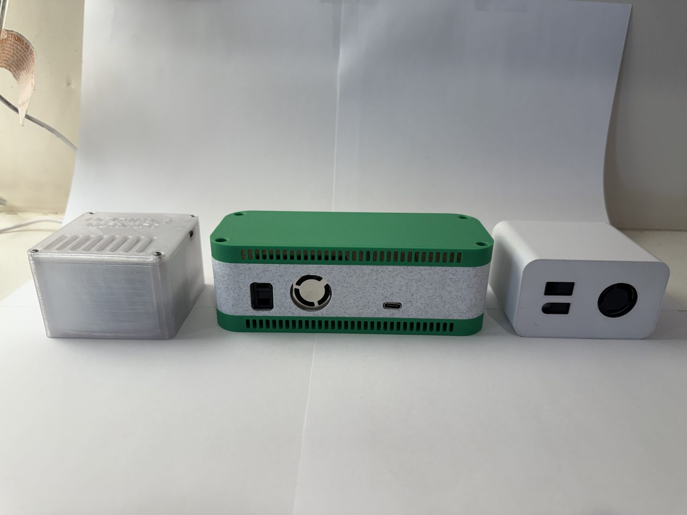
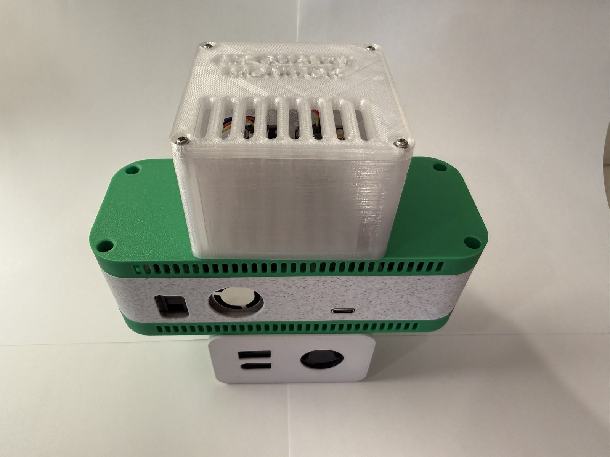

Air Quality Monitor Comparison
All three generations, side by side. Each iteration removed parts, added capability, and moved more of the complexity into software — which is exactly the direction a project like this should move.


The Generations
- Air Quality Monitor V1 — the original: ESP32-S2, PMSA003I, SGP30, and BME680 over MQTT to Grafana.
- Air Quality Monitor V2 — SEN55 + SCD41 on a XIAO ESP32-C6, running ESPHome in Home Assistant.
- Air Quality Monitor V3 — the SEN66 all-in-one build with 15 second updates.
Component Pricing
| Component Role | Generation 1 | Generation 2 | Generation 3 |
|---|---|---|---|
| Microcontroller | ESP32-S2 Feather — $18.00 | XIAO ESP32-C6 — $5.00 | XIAO ESP32-C6 — $5.00 |
| Particulate matter | PMSA003I — $45.00 | SEN55 — $30.00 | SEN66 — $59.00 (includes everything below) |
| CO2 | SGP30 eCO2 estimate — $18.00 | SCD41 true CO2 — $50.00 | Integrated true CO2 — included |
| VOC / temp / humidity | BME680 — $19.00 | Included in SEN55 + SCD41 | Integrated — included |
| Connectors, case & hardware | $3.00 cables, $24.00 filament, $10.00 M2 hardware | $4.50 adapter, $2.00 cables | — |
| Total | $137.00 | $91.50 | $64.00 |
Capability
| Capability | Generation 1 | Generation 2 | Generation 3 |
|---|---|---|---|
| Particulate matter | PM1.0 / PM2.5 / PM10 (PMSA003I — now failed) | PM1.0 / PM2.5 / PM4 / PM10 (SEN55) | PM1.0 / PM2.5 / PM4 / PM10 (SEN66) |
| CO2 | eCO2 estimate from VOC (SGP30) | True CO2 (SCD41) | True CO2 (integrated) |
| VOC | Raw MOX resistance + SGP30 TVOC | VOC index + NOx index | VOC index + NOx index |
| Temperature / humidity | BME680 | SEN55 + SCD41 (two sources) | SEN66 |
| Update rate | Continuous with sleep-mode issues | 5 minutes | 15 seconds |
| Platform | CircuitPython → MQTT → InfluxDB → Grafana | ESPHome → Home Assistant | ESPHome → Home Assistant |
Ease of Build
| Aspect | Generation 1 | Generation 2 | Generation 3 |
|---|---|---|---|
| Soldering | None (all STEMMA QT) | Limited — soldered the JST STEMMA connector to the XIAO to adapt to I2C | Yes — SEN66 wired straight to the XIAO (drops the adapter board from the BOM) |
| Power | Battery experiments abandoned — the PM sensor draw made deep sleep impractical, so it ran from USB | USB-C port on the XIAO | USB-C port on the XIAO |
| Firmware | CircuitPython, custom drivers, calibration code | ESPHome YAML, no driver code | ESPHome YAML, even less of it |
| Server stack | Mosquitto + Node-RED + InfluxDB + Docker + Grafana on a Raspberry Pi | Home Assistant only | Home Assistant only |
| Case | Custom 3D print, multi-piece with hardware | Custom 3D print, three pieces | Custom 3D print, body + retainer |
Field Data: AQM2 vs AQM3
With both newer generations reporting into Home Assistant, I can finally answer the question this whole project has been building toward: do the builds agree with each other? The charts below compare Generation 2 (SEN55 + SCD41) against Generation 3 (SEN66) over the same history exported from Home Assistant.
Two things to keep in mind when reading them. First, the monitors do not live in the same room, so they are not measuring identical air — some scatter is expected simply from placement. Second, you can actually see the air conditioning cycle in the temperature data, with a daily swing of roughly 3 to 4 °F as the system turns on and off. Both devices have been running like this for well over a year without issue.
Even with those caveats, the agreement is excellent:
| Channel | Paired points | Mean difference | Typical spread (±1 std) | RMSE | Correlation |
|---|---|---|---|---|---|
| Temperature | 257 | 0.00 °F | ±1.05 °F | 1.04 °F | 0.75 |
| CO2 | 257 | −22.3 ppm (SCD41 reads lower) | ±26.6 ppm | 34.6 ppm | 0.89 |
| VOC index | 257 | −2.0 | ±27.2 | 27.2 | 0.92 |
| Humidity | 284 | +3.5 %RH (SEN55 reads higher) | ±1.10 %RH | 3.71 %RH | 0.85 |
Temperature agrees to within 0.002 °F on average across 257 hours of data — the two sensors are effectively measuring the same house. CO2 tracks beautifully with a correlation of 0.89, with the SCD41 reading a consistent 22 ppm lower than the SEN66. The VOC indices move together with a correlation of 0.92. Humidity carries a small offset of about 3.5 %RH but tracks the same ups and downs. For two different sensor families in two different rooms, that is a very strong endorsement of both.
It is also worth checking these numbers against what the manufacturers actually promise. The SEN5x and SEN6x datasheets and the SCD4x datasheet spell out the accuracy of every channel, and the observed differences between the two builds land well inside the combined tolerances:
| Channel | Observed difference | Claimed accuracy per sensor | Combined worst case | Within spec? |
|---|---|---|---|---|
| Temperature | 0.00 °F mean, ±1.05 °F spread | ±0.45 °C (±0.81 °F) | ±1.62 °F | Yes |
| CO2 | −22.3 ppm mean, ±26.6 ppm spread | SCD41: ±(40 ppm + 5% of reading) ≈ 68 ppm at 560 ppm SEN66: ±(30 ppm + 3% of reading) ≈ 47 ppm at 580 ppm |
≈ ±115 ppm | Yes |
| Humidity | +3.5 %RH mean, ±1.10 %RH spread | ±4.5 %RH each | ±9 %RH | Yes |
| VOC index | r = 0.92 | Relative index (1–500), no absolute accuracy claim | — | Strong tracking |
Temperature — hourly, Oct 1–11
CO2 — hourly, Oct 1–11
VOC index — hourly, Oct 1–11
Humidity — 5 minute, Oct 10–11
PM1.0 — 5 minute, Oct 10–11
PM2.5 — 5 minute, Oct 10–11
PM4 — 5 minute, Oct 10–11
PM10 — 5 minute, Oct 10–11
The particulate charts above are the most telling of the bunch. They show every size bin the sensors report, all three generations in the same 25 hour window. Generation 1's PMSA003I — dead after years of service — sits pinned at roughly 208 µg/m³ on PM2.5 and PM10, high and mostly constant, exactly what a failed laser-scattering sensor looks like. Meanwhile the SEN55 and the SEN66 report clean indoor air in the same window, usually under a few µg/m³. Note that Generation 1 never had a PM4 channel (the PMSA003I only measured three bins), so that chart shows just the two newer generations. It is a perfect illustration of why the newer builds moved to the SEN family in the first place, and it is the chart that officially retires Generation 1's particulate data.